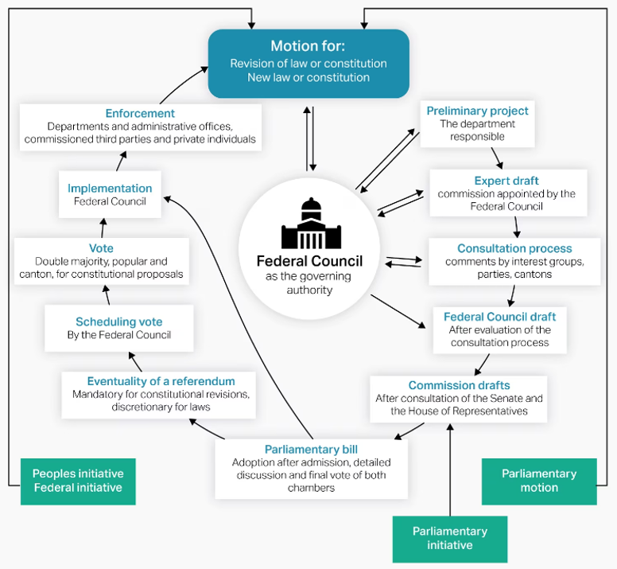

25 September 2026 (Lucerne) and 1 October 2026 (Bern)
Center for Health, Policy and Economics (CHPE), Faculty of Health Sciences and Medicine, University of Lucerne
Center for Health, Policy and Economics (CHPE), Faculty of Health Sciences and Medicine, University of Lucerne
Over the next two days, we will ask one central question:
Why is solving major health-policy problems in Switzerland so politically difficult — and under what conditions can change nevertheless happen?
Assistant Professor of Health and Social Policy
University of Lucerne
Postdoctoral Researcher
University of Lucerne
Current SNSF project: Party politics and the politicization of health care (2025–2029)
Imagine you are Federal Councillor Elisabeth Baume-Schneider.
Scan the QR code and submit one reform proposal.
There is no need to justify it — yet.
A good policy idea is not yet a politically feasible and workable reform.
How does Swiss health policy work?
Institutions
Actors and interests
Political process
How do we apply the toolkit to major policy challenges?
Understand the problem
Analyse the politics
Develop policy solutions
How does it work in the real world?
Canton of Bern
Federal Palace
Exchange with policymakers
Part 1
Who can decide?
Institutions and responsibilities
Who wants what?
Actors, interests and political conflict
How does change happen?
The Swiss policy process
We will use these three questions throughout the course.
Analytical toolkit
Federalism and subsidiarity
Political authority is distributed across levels of government.
Direct democracy
Citizens can directly intervene in political decisions.
Power sharing and negotiated governance
Political decisions typically require compromise and coordination across institutions and organised interests.
Swiss health policy has no single centre of political authority.
In a federal state, both the Confederation and the cantons exercise their own constitutionally protected powers.
Art. 3 BV
“The Cantons are sovereign except to the extent that their sovereignty is limited by the Federal Constitution.”
Federal Constitution · Art. 3 BV
The key question is therefore: Who has the constitutional authority to act?
Art. 42 Abs. 1 BV
“The Confederation shall fulfil the duties that are assigned to it by Federal Constitution.”
Federal Constitution · Art. 42 Abs. 1 BV
Historical origin: Switzerland developed from a confederation of largely sovereign cantons into a federal state in 1848.
Federalism means that powers are divided, not simply delegated from the centre.
1848
Federal state
Health remains predominantly cantonal, with very limited federal competence for epidemic control.
1890
Insurance competence
The Constitution authorises federal legislation on sickness and accident insurance.
1912
KUVG / LAMA
Federal legislation regulates and subsidises voluntary sickness insurance.
1994
KVG / LAMal
Mandatory basic insurance creates a much stronger national regulatory framework.
Since then
Expanding federal role
Federal involvement expands further in regulation, quality, professional standards and public health.
The long-term trend is towards greater federal involvement — not towards a fully centralised health system.
Art. 5a BV
“The principle of subsidiarity must be observed in the allocation and performance of state tasks.”
Federal Constitution · Art. 5a BV
Art. 43a Abs. 1 BV
“The Confederation only undertakes tasks that the Cantons are unable to perform or which require uniform regulation by the Confederation.”
Federal Constitution · Art. 43a Abs. 1 BV
Art. 27 BV
“Economic freedom is guaranteed.”
“Economic freedom includes in particular the freedom to choose an occupation as well as the freedom to pursue a private economic activity.”
Federal Constitution · Art. 27 BV
Economic freedom shapes the organisation of Swiss healthcare: private providers and professionals play a central role, while the state regulates the conditions under which they operate.
Federalism also shapes the Federal Assembly:
Art. 156 Abs. 2 BV
“Decisions of the Federal Assembly require the agreement of both Chambers.”
Federal Constitution · Art. 156 Abs. 2 BV
Example: Prevention Act (2012)
National Council ✓ → Council of States ✕ → No law
At the federal level:
Constitutional amendments automatically require a popular vote.
Double majority of voters and cantons.
Legislation adopted by parliament can be challenged.
50,000 signatures within 100 days.
Citizens can propose constitutional change.
100,000 signatures within 18 months.
Citizens can both block political decisions and put new issues on the agenda.
1900 Insurance law ✕
1912 Insurance law ✓
1974 Initiative ✕
Counterproposal ✕
1987 KVG reform ✕
1994 New KVG ✓
Health insurance initiative ✕
2003 Health initiative ✕
2007 Single insurer ✕
2012 Managed care ✕
2014 Public insurer ✕
2021 Nursing initiative ✓
2024 Premium relief ✕
Cost brake ✕
EFAS ✓
Direct democracy creates an additional hurdle for major reform — but can also put new issues on the political agenda.
Swiss policymaking is characterised by:
Political authority is not only vertically dispersed through federalism. It is also exercised through negotiation and compromise.
In neo-corporatist governance, organised interests do more than lobby government from the outside.
They are formally involved in formulating, regulating or implementing policy.
Example: tariff autonomy
Provider and insurer organisations negotiate important elements of healthcare tariffs within a framework established by public law.
The state sets the framework but can share governance functions with organised interests.
Authority is divided across levels of government.
Citizens can challenge or initiate political decisions.
Decisions often emerge through coordination, negotiation and compromise.
The first lesson of Swiss health policy:
there is rarely a single decision-maker.
Analytical toolkit
Swiss health policy is shaped by the interaction of public authorities, organised private actors and citizens.
Federal institutions do not have fixed preferences: their political composition matters.
Cantons have main responsibilities for:
The Swiss Conference of Cantonal Health Directors (GDK) coordinates cantonal positions and represents common cantonal interests towards the Confederation.
Cantons do not simply implement federal policy: they are important policy-makers themselves.
These actors are directly affected by decisions on financing, tariffs, prices, regulation and professional autonomy — and seek to shape them.
Access
Quality
Choice
Affordable premiums
Public expenditure
Political preferences
Direct democracy
These interests do not necessarily point in the same direction.
Health-policy conflicts combine ideological differences, federalism and material interests.
Influence within the policy process
Influence through public and political pressure
Expertise · Access · Money · Members / voters · Implementation capacity
Analytical toolkit
1
Agenda
Which problems receive political attention?
→
2
Formulation
Which solutions are developed?
→
3
Decision
Which proposal is adopted?
→
4
Implementation
How is it put into practice?
→
5
Evaluation
What happens — and what comes next?
→
The policy cycle is an analytical map, not a description of a neat, linear process.

| Stage | Key question |
|---|---|
| Agenda setting | Why has this problem become politically important? |
| Formulation | Which solutions are considered — and which disappear? |
| Consultation | Who supports, opposes or demands changes? |
| Decision | Can a political majority be assembled? |
| Direct democracy | Will the decision be challenged — or driven by an initiative? |
| Implementation | Who must actually make the reform work? |
| Evaluation | Does implementation create pressure for further reform? |
A reform can be changed, delayed or blocked at several points.
Federal proposals are typically exposed to a consultation process (Vernehmlassung).
Cantons, parties, interest groups and other affected organisations can:
Potential opposition can therefore reshape policy before the formal decision.
Opponents of legislation may threaten an optional referendum.
This can encourage policymakers to:
Popular initiatives can work in the other direction by forcing issues onto the political agenda.
Direct democracy shapes policy both at the ballot box and through anticipation of a possible vote.
A policy adopted in Bern may still depend on:
There can be a substantial gap between policy on paper and policy in practice.
Why does one problem suddenly reach the political agenda while another does not?
Why does a proposal that has existed for years suddenly become feasible?
To explain major moments of change, we also need to understand political timing.
Is a condition recognised as a problem requiring political action?
Indicators, crises, feedback
Is there a solution that appears technically and politically feasible?
Ideas, evidence, policy communities
Is the political environment favourable?
Parties, public opinion, interests, political majorities
Change becomes more likely when the three streams are coupled in a policy window.
The 2021 vote was not simply a response to COVID-19: the streams had begun to converge years earlier, while the pandemic created a powerful decision window.
For any health-policy reform, ask:
Do not study only the policy outcome. Reconstruct the political process.
Institutions
Federalism, direct democracy and negotiated governance
Actors and interests
Preferences, conflicts and political resources
Political process
Agenda, formulation, decision and implementation
We now use this toolkit to investigate five big questions in Swiss health policy.
Application
(1) Containing healthcare costs
Prices & tariffs · volumes & capacity · benefits · pharmaceuticals · models of care
(2) Distributing healthcare costs
Premium subsidies · cost sharing · premiums vs taxes · solidarity & individual responsibility
(3) Securing access with a constrained workforce
Training & retention · regional shortages · professional roles · models of care
(4) Strengthening public health
Prevention · incentives & regulation · federal coordination · collective health threats
(5) Simplifying the healthcare system
Administrative burden · regulation & controls · digitalisation · fragmented responsibilities
Each group receives one policy brief:
Your task: develop a politically feasible response to your challenge.
Who is responsible?
Confederation, cantons, municipalities, private actors?
Who wants what?
Which actors support or oppose change — and why?
Where are the political constraints?
Federalism, direct democracy, organised interests, existing institutions?
Prepare a 5-minute pitch: What should be done — and how could it happen in Switzerland?
Thursday, 1 October 2026
Turn your Policy Challenge into a workable policy solution.
Be ready to pitch your proposal and ask policymakers concrete questions about its political and practical feasibility.
Health Policy in Switzerland · Day 1 · 25.09.2026